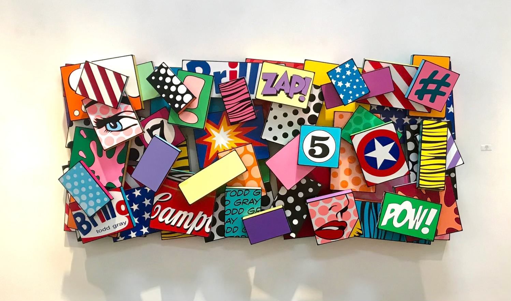

1962
"I think that art needs to be fundamentally beautiful and pretty to look at: like a melody in a song.
A song with no melody (to me) is like an art piece that is not beautiful.
It is not that art is not art if it is not beautiful nor music not music without melody, but the intention to create beauty is a primary force that has always driven me."
SOLO EXHIBITIONS
2019
"Outside of the Box" Bruce Lurie Gallery, Los Angeles, California
"Todd Gray - Pop Art" One Man Show, Aspen Art Gallery, Aspen, Colorado
"Pop Geometry" Anderson Museum of Art, Anderson, Indiana
"Pop Geometry" Swope Museum of Art, Terre Haute, Indiana
"POP!" Riverside Museum of Art (RAM), Riverside, California
"Pop Sculpture" CODA Gallery, Palm Desert, California
"Todd Gray - Pop Art” One Man Show, Skidmore Contemporary Art Gallery, Santa Monica, California
2018
World Trade Center Mural Project - Todd Gray Studios, New York City, New York
“Pop Geometry” Butler Museum of American Art, Youngstown, Ohio
“Pop Geometry” Fort Smith Art Museum, Fort Smith, Arkansas
“Pop Geometry” Hardin Center for Cultural Arts Chan Gallery, Gadsden, Alabama
2017
“Pop Geometry” Missouri State University Art and Design, Brick City Gallery, Springfield, Missouri
“Pop Geometry” The Goddard Museum, Ardmore, Oklahoma
2015
“Pop Geometry” Skidmore Contemporary Art Gallery, Santa Monica, California
1993
Martin Lawrence Galleries (11 throughout the U.S.)
Suzanne Brown Gallery, Scottsdale, Arizona
1992
Martin Lawrence Galleries (11 throughout the U.S.)
Suzanne Brown Gallery, Scottsdale, Arizona
1991
Peter Lembcke Gallery, San Francisco, California
Suzanne Brown Gallery, Scottsdale, Arizona
Andre Zarre Gallery, New York City, New York
1990
Schwartz Cierlak Gallery, Santa Monica, California
Suzanne Brown Gallery, Scottsdale, Arizona
1989
Wilshire Pacific Gallery, Los Angeles, California
Schwartz Cierlak Gallery, Santa Monica, California
GROUP EXHIBITIONS (selected)
2020
"Art Palm Springs" with Bruce Lurie Gallery, Palm Desert, California
"LA Art Show" with Bruce Lurie Gallery, Los Angeles, California
"Art Palm Beach" with Bruce Lurie Gallery, West Palm Beach, Florida
2019
"Context Art Fair" with Bruce Lurie Gallery, Art Basel, Miami, Florida
"SOFA Art Fair" with Bruce Lurie Gallery, Chicago, Illinois
"Houston Art Fair" with Bruce Lurie Gallery, Houston, Texas
"Affordable Art Fair" with Bruce Lurie Gallery, New York City, New York
"Art Market Hamptons" with Bruce Lurie Gallery, Hamptons, New York
"Aspen Art Fair" with Bruce Lurie Gallery, Culver City, California
"Aspen Art Fair" with Aspen Art Gallery, Aspen, Colorado
Bruce Lurie Gallery, Los Angeles, California
Aspen Art Gallery, Aspen, Colorado
"Art Busan", Seoul, South Korea
CODA Gallery, Palm Desert, California
HL Fine Art, Seoul, Korea
Eden Fine Art Galleries, San Francisco, California
2018
HL Fine Art, Seoul, Korea
Eden Fine Art Galleries, London, England
Eden Fine Art Galleries, New York, New York (SoHo & Madison Avenue)
Eden Fine Art Galleries, San Francisco, California
Eden Fine Art Galleries, Tel Aviv & Jerusalem, Israel
A Gallery, Palm Desert, California
CODA Gallery, Palm Desert, California
2017
Bel-Air Fine Art, Geneva, Switzerland, St. Moritz
Eden Fine Art Galleries, New York, New York (SoHo & Madison Avenue)
Eden Fine Art Galleries, San Francisco, California
Eden Fine Art Galleries, Tel Aviv & Jerusalem, Israel
A Gallery, Palm Desert, California
Eden Fine Art Galleries, London, England
2016
Bel-Air Fine Art, Geneva, Switzerland, St. Moritz
Eden Fine Art Galleries, New York, New York (SoHo & Madison Avenue)
Eden Fine Art Galleries, San Francisco, California
Eden Fine Art Galleries, Tel Aviv & Jerusalem, Israel
A Gallery, Palm Desert, California
2015
“Pop Geometry” A Gallery, Palm Desert, California
“Pop Geometry” One Man Show, Skidmore Contemporary Art, Santa Monica, California
“A working progress group show" Skidmore Contemporary Art, Santa Monica, California
"Art Market San Francisco" with Skidmore Contemporary Art, San Francisco, California
1997
Dick Kleinman Gallery, Cleveland, Ohio
Acme Fine Art, San Francisco, California
Katie Gingrass Gallery, Milwaukee, Wisconsin
A Gallery, ‘Assemblage’, Todd Gray & Craig French, Palm Desert, California
Vail Village Arts, Vail, Colorado
Windsors Gallery, Miami, Florida
Village Gallery, Scottsdale, Arizona
1996
Solomon Dubnick Gallery,’Sculptural Furnishings 4’
Sacramento , California
Nan Miller Gallery, ‘The Best of Both Worlds’
Rochester, New York
Richard Russell Gallery, New Orleans, Louisiana
Windsor’s Gallery,`Miami, Florida
Vail Village Arts, Vail, Colorado
Village Gallery, Scottsdale, Arizona
A Gallery, Palm Desert, California
Acme Fine Art, San Francisco, California
Katie Gingrass Gallery, Milwaukee, Wisconsin
1995
A Gallery, Palm Desert, California
Windsor’s Gallery, Miami, Florida
One World Gallery, Las Vegas, Nevada
1994
Sherwood Gallery, Laguna Beach, California
Westervelt Fine Art, Laguna Niguel, California
Elaine Sternberg Gallery, Chicago, Illinois
One World Gallery, Las Vegas, Nevada
A Gallery, Palm Desert, California
Suzanne Brown Gallery, Scottsdale, Arizona
Windsor’s Gallery, Miami, Florida
1993
Tokyo International Art Show, Tokyo, Japan
Posner Gallery, Milwaukee, Wisconsin
Gallery of Functional Art, ‘Magnetism- Force Follows Function’, Santa Monica, California
Sherwood Gallery, Laguna Beach, California
Westervelt Fine Art, Laguna Niguel, California
Pauline Hirsch Gallery, ‘Fusion 93- The Artist’s Role in Rebuilding L.A.’, Los Angeles, California
Elaine Sternberg Gallery, ‘ Todd Gray and Mark Beam’, Chicago, Illinois
One World Gallery, Las Vegas, Nevada
Devorzon Gallery, Los Angeles, California
A Gallery, Palm desert, California
Suzanne Brown Gallery, Scottsdale, Arizona
Madeline Michaels Gallery, Lahaina, Maui
Posner Gallery, ‘Oh Come All Ye Playful’, Santa Monica, California
1992
Devorzon Gallery, Los Angeles, California
CG Rein Galleries:
Minneapolis, Minnesota
Santa Fe, New Mexico
Houston, Texas
Suzanne Brown Gallery, Scottsdale, Arizona
Diane Nelson Gallery, ‘Winter Show’, Laguna Beach, California
A Gallery, Palm Desert, California
1993
Tokyo International Art Show, Tokyo, Japan
Posner Gallery, Milwaukee, Wisconsin
Gallery of Functional Art, ‘Magnetism- Force Follows Function’ Santa Monica, California
Sherwood Gallery, Laguna Beach, California
Westervelt Fine Art, Laguna Niguel, California
Pauline Hirsch Gallery, ‘Fusion 93- The Artist’s Role in Rebuilding L.A.’ Los Angeles, California
Elaine Sternberg Gallery, ‘ Todd Gray and Mark Beam’ Chicago, Illinois
One World Gallery, Las Vegas, Nevada
Devorzon Gallery, Los Angeles, California
A Gallery, Palm desert, California
Suzanne Brown Gallery, Scottsdale, Arizona
Madeline Michaels Gallery, Lahaina, Maui
Posner Gallery, ‘Oh Come All Ye Playful’ Santa Monica, California
1992
Devorzon Gallery, Los Angeles, California
CG Rein Galleries:
Minneapolis, Minnesota
Santa Fe, New Mexico
Houston, Texas
Suzanne Brown Gallery, Scottsdale, Arizona
Diane Nelson Gallery, ‘Winter Show’, Laguna Beach, California
A Gallery, Palm Desert, California
1991
Peter Lembcke Gallery, ‘Summer Show’, San Francisco, California
A Gallery, Palm Desert, California
Diane Nelson Gallery, ‘Summer Show’, Laguna Beach, California
Parks Gallery, Tokyo, Japan
CG Rein Galleries
Minneapolis, Minnesota
Santa Fe, New Mexico
Houston, Texas
Diane Nelson Gallery, ‘Salon Show’, Laguna Beach, California
Spectrum Gallery, ‘Todd Gray and Nancy Henderson’ Palm Desert, CA
Sherwood Gallery, Laguna Beach, California
Andre Zarre Gallery, New York City, New York
Schwartz Cierlak Gallery, Santa Monica, California
1990
Diane Nelson Gallery, ‘Color Five’, Laguna Beach, California
Spectrum Gallery, ‘Bruzzi’s’, Palm Desert, California
Andre Zarre Gallery, ‘New Yorkers and Outsiders’ New York City, NY
Sherwood Gallery, Laguna Beach, California
Schwartz Cierlak Gallery, ‘Summer Show’ Santa Monica, California
Suzanne Brown Gallery, Scottsdale, Arizona
Patton Duval Gallery, Los Angeles, California
1989
Andre Zarre Gallery, ‘Wood, Metal, Stone’ New York City, New York
Brand Gallery, ‘Dealers Choice- Selections from Art Dealers Association of California’, Glendale, California
Spectrum Gallery, Palm Desert, California
Patton Duval Gallery, Los Angeles, California
Schwartz Cierlak Gallery, Santa Monica, California
Suzanne Brown Gallery, Scottsdale, Arizona
Art Expressions Gallery, San Diego, California
1988
Schwartz Cierlak Gallery, ‘Tryptychs by Eight Artists’ Santa Monica, California
Suzanne Brown Gallery, Scottsdale, Arizona
Patton Duval Gallery, Santa Monica, California
Much of my inspiration is garnered from music as most of my time creating art is done with music as my backdrop. The two are interchangeable. So, it comes as no surprise that music metaphors are indelibly intertwined with my artistic definitions. Secondly, I believe that art should say something like the lyrics in a song. And finally, my highest goal, (and the one I always strive for) would be to create art that is somehow meaningful… and profound… and significant like great music which mixes profoundly moving lyrics with incredible melody. Like Bob Marley or John Lennon or Bob Dylan... These are the simple yardsticks and beacons I use and I have more or less held to them steadfast through the years. I might have different intentions and desires with regards to each individual body of work but my core beliefs always hold true to these simple maxims